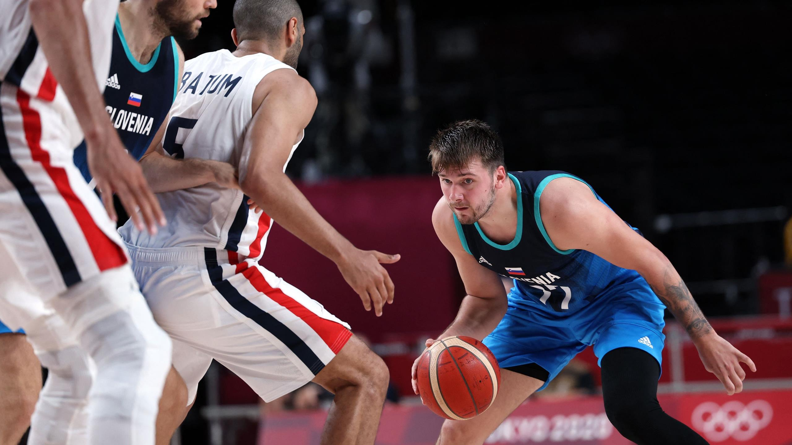
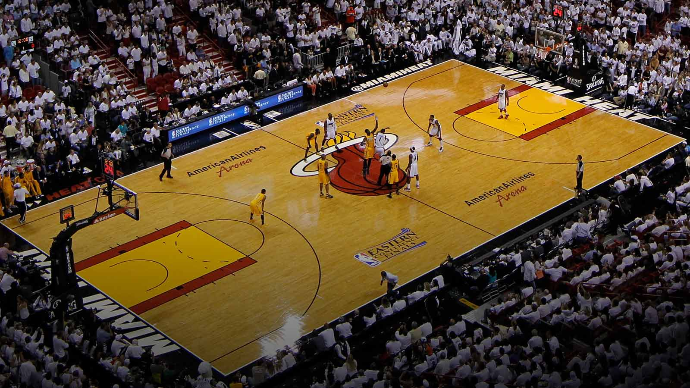
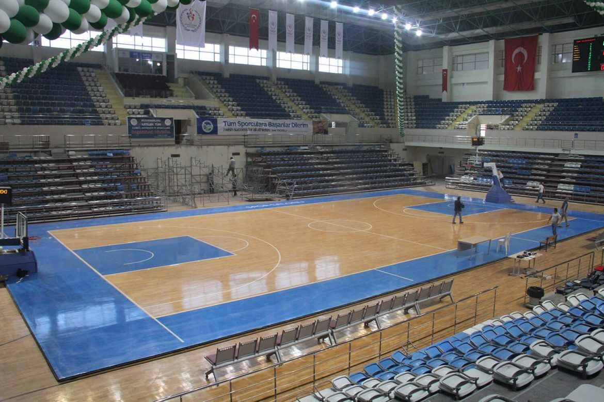

Basketbol oynamak için 5 kişiden oluşan iki takım gereklidir. Sadece el ile oynanmaktadır. Basketbol topunun ayak ile temas etmemesi gerekir. Oluşturulmuş takımlar belli kurallar çerçevesinde topu hareket ettirerek ve arkadaşına pas atarak potaya gitmeye çalışır. Üçlük veya ikilik şeklinde atılan atışlar ile sayı kazanmak amaçlanmıştır.

Basketbol Kuralları
Basketbol kuralları Nba ve bazı ligler dışında standart kurallar ile oynanmaktadır. Bu kurallar Avrupa ve Türkiye’de kabul edilmiş olan genel kurallardır:
1.Öncelikle 5 kişiden oluşan iki takım oluşturulur. Ayrıca kenarda her bir takım için 7 tane yedek oyuncu bulunmalıdır.
2.Masa hakemleri hariç 3 tane hakem bulunmalıdır. 2 hakem saha içerisinde görev alırken diğer hakem ise masada bulunmalıdır.
3.Basketbol oyun süresi 10 dakikalık periyotlar halinde yapılmaktadır. Birinci ve ikinci periyot ilk yarıyı, üçüncü ve dördüncü periyot ise ikinci yarıyı oluşturmaktadır.
4.Basketbol maçı eğer son periyotta beraberlik ile sonuçlanırsa maç uzatmaya gider. Uzatma sonucunda hangi takımın kazandığı belli olur.
5.Takımların hücum süresi 24 saniyedir. 24 saniye sonunda top elden çıkmazsa ve hala aynı takımda ise süre biter. Böylece top karşı takıma geçer.
6.Atışlar ikilik ve üçlük olarak ayrılmıştır. Üç sayı çizgisi dışından yapılan atışlar üçlük olarak nitelenmiştir. Serbest atışlar ise atış başına bir sayı kazandırmaktadır.
7.Bir oyuncu 5 kez faul yaparsa oyun dışında kalır. Oyuncu değişikliği ise sınırsızdır. Takımların her periyotta mola alma hakkı vardır.


Saha Ölçüleri
Basketbol sahaları dikdörtgen şeklinde tasarlanmıştır. Potanın bulunduğu yerler kısa kenarlar olmaktadır. Diğer alanlar ise uzun kenarları oluşturmuştur. Basketbol sahasının uzun kenarları olan taraflar 28 metre boyundadır. Potanın bulunduğu kısa kenarlar ise 15 metre boyundadır. Pota ise kenar çizgisinden 1.2 metre içeride yer almaktadır. Potanın yerden yüksekliği 3.05 metredir. Ayrıca saha ile tribün arasında en az 2 metrelik mesafe bulunması gerekmektedir.